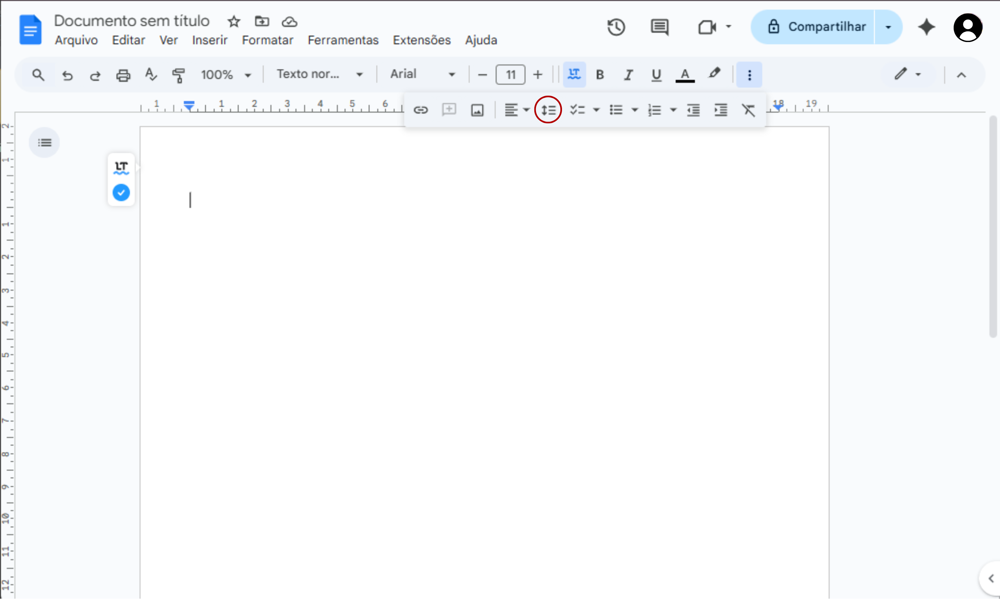
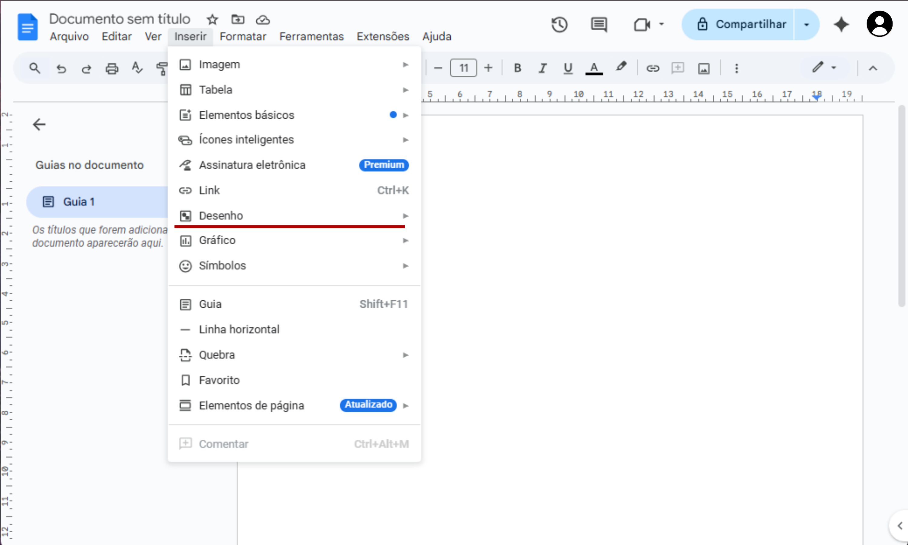
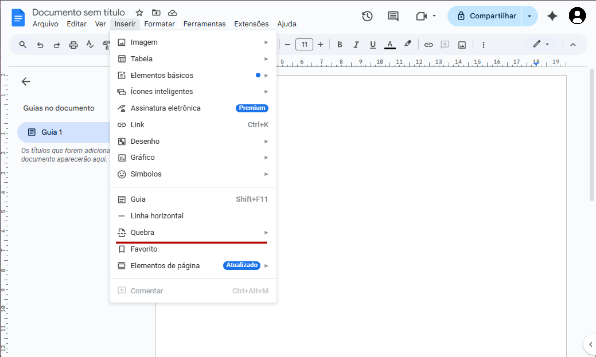

Como usar as ferramentas do google documentos
O que é o google documentos
Também conhecido como google docs ou apenas docs é a versão da google do word que funiona online atravez do navegador e tem como função criar, abrir e editar documnetos.
Tela de edição
Ao criar um novo arquivo ou abrir um arquivojá existente a página de edição é aberta.
Lupa de pesquisa
Ao clicar no símbolo de lupa é possível pesquisar ferramentas ou funções do menu. Para pesquisar algo dentro do texto do documento o atalho Ctrl+F (Aperte a tecla F enquanto pressiona a tecla Ctrl, esse atalho funciona em qualquer página do navegador), para pesquisar nos menus o atalho é Alt+/(Aperte a tecla /, que pode conter outros símbolos, enquanto pressiona a tecla Alt)
Desfazer e refazer
Ao clicar na seta virada para a esquerda a última ação feita é desfeita, clicando na seta virada para a direita é possível refazer a última ação caso ela tenha sido desfeita. O Ctrl+Z é o atalho usado para desfazer e o Ctrl+Y para refazer.
Imprimir
Caso seu computador/notebook esteja conectado a uma ipressora clicar no símbolo levará as configurações de impressão, onde é possível ajustar o tamanho(A4, A5...), a quantidade de cópias, a cor(colorido ou preto e branco) e quais páginas imprimir. O atlho para imprimir é o Ctrl+p
Verificação ortográfica e gramatical
Ao clicar no botão de verificação irá fazer sugestões de correção como acentos que estão faltando ou palavras que possívelmente não estão com a ortografia correta.
Pintar formatação
Selecione com o botão direito do mouse a parte cuja formatação será copiada, em seguida clique no pincel de formatação e selecione novamente com o botão direito agora a parte em que a formatação será aplicada. Também pode ser usado em imagens, tabelas e gráficos.
Zoom

Aqui é onde se define quanto de zoom a página de texto vai ter para facilitar a visualização sem ter que mudar o tamanho da fonte. Para dar zoom em tudo(texto e menu) use os atalhos Ctrl++(pressione a tecla + ao mesmo tempo que a tecla Ctrl) para almentar e Ctrl+-(Ctrl mais -) para diminuir.
Tipo de texto
Aqui é possível definir a função de uma parte do texto de duas formas, escolhendo antes de escrever ou selecinado a parte desejada e substituindo seu tipo. O padrão são o texto normal(corpo do texto), subtítulo e tipos de título, mas é possível também criar um estilo de texto.
Tipo de fonte
Aqui é onde se define o estilo de fonte do documento, é possível definir diferentes fontes para diferentes partes do texto. Arial e Times New Roman são as fontes mais comuns, mas elas existem em diversos estilos e para diversar finalidades.
Tamanho da fonte
Aqui é onde se define o tamanho do texto, normalmente se usa o tamanho de 10 a 12, mas como algumas fontes tem tamanhos diferentes isso pode varias um pouco, a função no texto também pode influenciar no tamanho.
É um estilo de texto mais espesso e escuro que o texto regular, usado para destacar palavras ou frases e chamar a atenção do leitor para pontos importantes, melhorando a legibilidade e hierarquia visual do conteúdo. Selecione a opção de negrito antes de escrever a parte a ser destacada ou selecione uma parte já escrita para destacar. Também é possível ativar atravez do atalho Ctrl+B.
É um estilo de escrita com letras inclinadas para a direita, usado para dar ênfase a palavras ou frases, destacar títulos de obras, indicar termos estrangeiros ou metalinguísticos, ou para representar o pensamento de um personagem. Selecione a opção de itálico antes de escrever a parte a ser destacada ou selecione uma parte já escrita para destacar. Também é possível ativar atravez do atalho Ctrl+I.
É um trecho de texto onde se traça uma linha horizontal por baixo das palavras ou caracteres, com o objetivo de realçar, enfatizar ou indicar a importância do conteúdo destacado. Selecione a opção de itálico antes de escrever a parte a ser destacada ou selecione uma parte já escrita para destacar. Também é possível ativar atravez do atalho Ctrl+U.
Cor do texto
É onde se define cor do texto, uma paleta com cores e tens variados fica disponível, mas também é possível escolher uma cor personalizada atravez do conta-gotas e selecionar uma cor já existente no documento ou usar a roda de cores e códigos para uma nova cor.
Cor de destaque
Funciona da mesma forma que a cor do texto, mas ao invés de colorir a fonte aplica a cor como uma especie de marca-texo.
Inserir imagem
É aqui que se clica para inserir uma imagem, ela pode já estar no computador, também é possível colar o link ou mesmo pesquisar na internet.
Mais opções
Dependendo do tamanho da tela o que fica dentro dos três pontinhos(mais opções) pode variar ou até não aparecer.
Alinhamento
Aqui é onde se alinha o texto, são quatro tipos: a direita(Encosta o texto na margem direita), a esquerda(Encosta o texto a esquerda), ao centro(Alinha cada linha no centro) e justificado(Alinha o texto a direita e a esquerda de forma igual).
Espaçamento entre linhas e paragrafos
Aqui é que se define o tamanho do espaçamento entre linhas e paragráfos, 1,5 é o mais usado.
Lista de verificação
Adiciona quadrados antes da linha que pode ser marcado para dizer que o item da lista está ok. Pressione Enter para passar para o proxímo item e pressio novamente para encerrar a lista. O atalho é Ctrl+Shift+9, em alguns teclados o Shift é uma seta para cima.
Lista com marcadores

Adiciona símbolos(bolinhas por padrão) antes da linha e diferente da lista de verificação não pode ser marcada. Pressione Enter para passar para o proxímo item e pressio novamente para encerrar a lista. O atalho é Ctrl+Shift+8, em alguns teclados o Shift é uma seta para cima.
Lista numerada
Adiciona números ou letras antes da linha e diferente da lista de verificação não pode ser marcada. Pressione Enter para passar para o proxímo item e pressio novamente para encerrar a lista. O atalho é Ctrl+Shift+7, em alguns teclados o Shift é uma seta para cima.
Lista com marcadores
Ao clicar na seta virada para a esquerda o recuo do texto diminui, clicando na seta virada para a direita o recuo almenta. O Ctrl+[ é o atalho usado para diminuir e o Ctrl+] para almentar.
Limpar formatação
Limpa quanquer formatação personalizada do documento e retorna a formatação padrão, que pode ser a original do docs ou uma formatação personalizada que foi definida como padrão. O Ctrl+\ é o atalho usado.
Arquivo
Aqui estão as opções e configurações referentes as arquivo.
Novo
Aqui é onde se cria um novo arquivo podendo ser um documento em branco ou um da galeria de modelos que contem arquivos pré-prontos, como currículos, cartas e planos de aula.
Abrir
Aqui é possível abrir um arquivo já existente. Os tipos de arquivos que podem ser abertos no docs são: .DOC, .DOCX, .DOCM, .ODT E .TXT, há também alguns outros formatos voltados para a programação. Atalho Ctrl+O
Fazer uma cópia
Ao clicar aqui é possível fazer uma cópia do arquivo, chamada de "Nome do arquivo(1)", caso haja mais cópias o número corresponde a qual cópia é.
Compartilhar
Aqui é possível adicionar e-mail de pessoas para que o arquivo fique disponível para elas ou cópiar o link para compartilha-lo, nesse caso é presciso mudar o acesso de 'Restrito' para 'Qualquer pessoa com o link'.
Aqui é possível enviar o arquivo por e-mail ou criar um rascunho de e-mail.
Baixar
Aqui é onde se faz o dowlonad do arquivo para o computador, até então o arquivo está sendo salvo na nuvem. É possível baixar nos seguintes formatos: .PDF, .ODT, .TXT, .DOCX, .RTF, .HTML, .EPUB E .MD.
Renomear
Por padrão todo arquivo é chamado de 'Documento sem título' e aqui é possível substitui-lo por qualquer outro nome.
Mover

Todos os arquivos abertos e criados vão parar na página principal do google drive(a nuvem da google), e aqui é possível para outros locais dentro do drive, mesmo os que não estão na página principal.
Mover para a lixeira
É possível excluir um arquivo movendo-o para a lixeira, mas caso um arquivo tenha sido excluido por engano é possível acessar a lixeira e restaurar o arquivo desde que tenham se passado menos de 30 dias, caso contrario, a restauração não será possível. Um arquivo pode ser excluido permanentemente antes do tempo atravez da lixeira.
Histórico de versões
O docs salva automaticamente qualquer alteração feita no arquivo criando um registro com data e hora da modificação, é possível acessar
esses registros e restaurar versões anteriores do arquivo.
Tornar disponível off-line
Armazena no seu computador os documentos disponiveis para acesso offline, permitindo que sejam editados sem conexão com a internet, e depois salvando na nuvem as alterações assim que uma conexão for estabelecida.
Detalhes
Aqui estão as informações do arquivo, proprietario, local de armazenamento, data de criação e de última modificação.
Configuração da página
Aqui é possível editar tamanho da página(A4, A5...), cor, formato(retrato, paisagem) e tamanho das margens.
Configuração da página
Aqui é onde estão as opções e ferramentas de edição.
Localizar e substituir
Serve para localizar uma palavra no texto e substitui-la por outra se ter que substituir manualmente todas as vezer em que a palavra aparece no texo.
Inserir
Aqui é onde se pode adicionar coisas que não são texto no documento.
Tabela
Aqui é onde se pode inserir uma tabela configurando o numero de linhas e colunas.
Elementos básicos
São modelos de tabelas e listas de verificação pré-prontas, também é poss crias elementos e torna-los pré-prontos.
Ícones inteligentes

Funcionam como atalhos interativos que permitem inserir e interagir com informações de outras aplicações
Assinatura eletrôniica
É uma função paga que permite que documentos sejam assinados de forma digital.
Ícones inteligentes
Funcionam como atalhos interativos que permitem inserir e interagir com informações de outras aplicações
Link
Insere um link funcional no texto, se aplicado em um texto selecionado o texto funciona como um link. O atalho Crtl+K funciona aqui.
Desenho

Abre uma aba onde é possível fazer desenhos e inseri-los no texto.
Gráficos
Aqui é possível criar um gráfico ou importar uma planilha para gerar um.
Símbolos
Aqui é possível ter acesso a varios símbolos como: emojis, caracteres de outros idiomas, símbolos matematicos. Também é possível procurar um símbolo atravez da pesquisa por desenho ou pelos filtos.
Guia
Ativa e desatida uma guia que fica na lateral esquerda do texto e funciona como um sumário. Quando um texto é definido como título ele automaticamente aparece na guia.
Quebra de página
É usada para quando se termina de escrever em uma página sem ter chegado ao final dela e se quer começar a escrever em uma nova página, assim caso se adicione mais texto na página de cima a seguinte não é afetada.
Elementos da página
Insere e configura: marca d'água, cabeçalho, rodapé, sumário e númera as páginas.
Formatar
É a parte responsavel pelas configurações do texto.
Texto
Além do negrito, italico e sublinhado aqui é possível tornar todas as letras maiúsculas ou minúsculas e rebaixar e elevar letras e números.
Estilo de paragráfo
Aqui fica as opções de texto e as configurações de personalição.
Alinhar e recuar
Aqui junta as opções de alinhamento com as de recuo.
Colunas
Aqui é possível separar o texto em duas ou três colunas e voltar para uma só.
cabeçalhos e rodapés
É aqui que se configura a aparência dos cabeçalhos e rodapés.
Orientação da página
Aqui é possível mudar a página para vertical(retrato) ou horizontal(paisagem).
Formatação de elementos
Caso haja imagens e/ou tabelas no arquivos é possível configura-las por aqui.
Ferramentas
É a parte responsavel pelas configurações do texto.
Contagem de palavras
Aqui é possível visualizar quantas palavras, caracteres e espaços o texto possui, além de poder ativar um contador de palavras no canto inferior esquerdo.
Comparar documentos
É uma opção para quando se tem mais de uma versão de um documento e se quer saber quais as alterações foram feitas.
Citações
Aqui se pode configurar as infromações de uma citação para que ela já seja inserida na formatação certa.
Traduzir documento
Aqui é possível usar o google tranlate para traduzir um documento(Como a tradução não é feita por uma pessoa alguns termos podem acabar ficando muito literais).
Digitação por voz
Ao ativar essa opção e ligar o microfone e possível diatar algo para sem escrito sem prescisar digitar.
Configuração de notificações
Caso o arquivo esteja sendo compartilhado é possível confingurar quais ações de outros serãoo notificadas.
Acessibilidade
Aqui é possível configurar algumas opções para melhor visualização dos documentos e o suporte para braille.